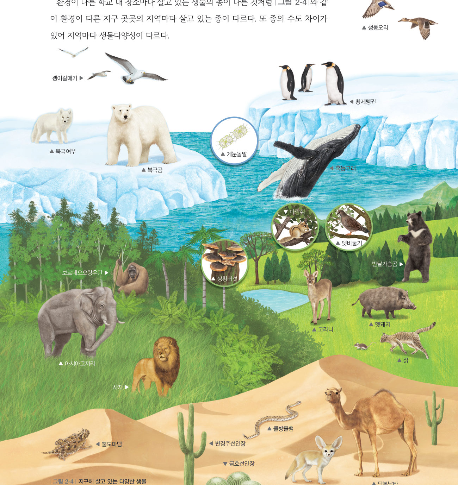

환경이 다른 장소마다 사는 생물의 종이 다르다고 했지? 온습도 센서와 빛 센서로 만든 ‘서식 환경 측정기’를 들고 학교 곳곳을 다니며 온도·습도·밝기를 재고, 그곳에서 관찰한 생물의 종 수와 비교해 보자.
준비물 아두이노 UNO, 브레드보드, DHT11 온습도 센서(37종 센서 키트), 빛 센서(CDS), 10 kΩ 저항, 점퍼선, USB 보조 배터리 또는 노트북, 스마트 기기(생물 촬영)
| 부품 | 부품 핀 | 아두이노 핀 |
|---|---|---|
| DHT11 온습도 센서 | VCC (+) | 5V |
| DATA (S) | 2번 | |
| GND (−) | GND | |
| 빛 센서 CDS | 한쪽 다리 | 5V |
| 다른 쪽 다리 | A0 (10 kΩ 저항으로 A0 ↔ GND) |
코드를 불러오는 중…
| 평가 항목 | 스스로 평가 |
|---|---|
| 같은 날 비슷한 시각, 같은 방법으로 여러 장소를 측정하고 관찰했다. | |
| 측정 자료로 서식 환경과 생물다양성의 관계를 설명했다. |